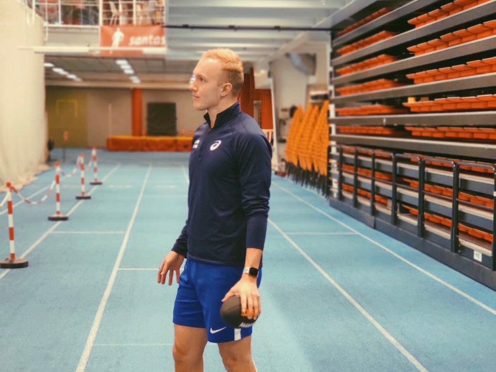
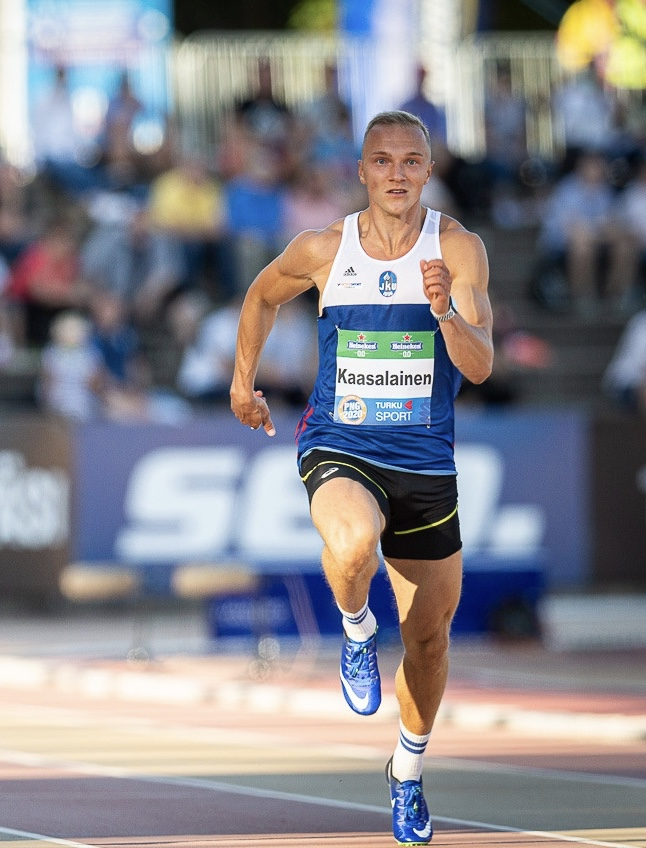

Takaisin
Hallikausi 2020

Morjens! Hallikauden tuloksista voi huomata selkeän nousujohteisen trendin, ja se kyllä lämmittää mieltä. 200 metrillä aikaisempi halliennätys ei ollut erityisen hyvä verrattuna ulkona juostuun, mutta ainakin lyhyen radan ennätys kirjattiin nyt oikealle sekuntiluvulle. Pitkän radan ennätys on jo ihan mukiinmenevä, ja siihen voi melkein olla tyytyväinen. Oma juoksutekniikkani toimii huomattavasti paremmin ulkoradan kaarteissa, joten en odottanut hallissa yltäväni samanlaisiin tuloksiin kuin yleensä kesällä.
Talven aikana starttasin selkeästi eniten 200 metrillä, mutta juoksin kerran myös 60m ja elämäni ensimmäisen nelkun (400m). 60m suoritus jäi oman valintani myötä alkueriin, koska kisapäivänä jalat tuntuivat kirealtä, eikä edes tuossa alkueräjuoksussa saanut koneesta kaikkea irti. Nelkku meni mielestäni odotettua paremmin. Suoritus oli sopivan rohkea, mutta vauhdinjako oli silti järkevä. Harmittavaa kuitenkin oli se, että jouduin aika heikkotasoiseen erään, joten juoksu oli täysin sooloilua. Uskon, että kiriapu olisi siivittänyt aikaani hieman kovemmaksi, mutta yksinkin oli kiva juosta. Vaikka annoin itsestäni kaiken mitä kahden aikaisemman startin jäljiltä kropassa oli, niin suoritus oli yllättävän tasapainoinen ja tuntui hyvältä. Totta kai viimeiset 100m jalat olivat tunnottomat ja vilkuilin jo loppusuoralla lähintä roskista, mutta osasin jo odottaa hidasta kuolemaa ensimmäisen 150 metrin jälkeen :D
Kokonaisuudessaan hallikausi 2020 taisi olla urani vilkkain, ja startteja kertyi 8. Tämän lisäksi ennätyksiä korjailtiin peräti 6 kertaa. Parasta hallikaudessa oli, että tiukka kisatahti auttoi luomaan tietynlaista ruutinia ja varmuutta omaan tekemiseen kisatauon jäljiltä. Tästä eteenpäin treenikausi jatkuu muutaman lepo- ja suunnittelunpäivän merkeissä, joiden jälkeen normaali treenirytmi jatkuu. Toivon saavani kevään leiritykset lyötyä lukkoon mahdollisimman pian ja niistä lisää sitten joskus. Tsemit kevääseen!
- Viljami
Takaisin
Takaisin
Kesä 2020 = Paras kausi

Morjens! Mistähän sitä alkaisi... Tää kesä oli aikamoista vuoristorataa ja kaikenlaista ehti tapahtua niin hyvässä kuin pahassa. Kokonaisuudessaan kausi oli mitä parhain ja elämäni paras. Tarkoituksena oli juosta paljon 200 metrin kisoja, ja sitten vain muutama 100 ja 400 metrin kisa tuntuman mukaan. Suunnitelma ei pitänyt, koska jostain syystä tänä kesänä järjestettiin todella vähän 200 metrin kisoja, joten satasia tulikin juostua yllättävän paljon. Näin jälkikäteen ajateltuna se ei paljoa haitannut.. :D
KESÄKUU
Kisakausi starttasi aika rauhallisesti muutamalla pikkukisalla kotona Jyväskylässä. Kauden avaaminen tapahtui Harju Cupissa 300 metrilla, jossa juoksin hyvän ajan 33,94. Samana päivänä juoksimme JKU:n kanssa myös 4x100m viestin aikaan 40.45, joka olisi riittänyt leikitellen SM-viestien kultamitaliin viime vuonna. Samalla viikolla kävin vielä Lappeenrannassa kilpailemassa 200 metrillä, mutta kisa oli aikamoinen pettymys, koska jouduimme juoksemaan todella kovaan vastatuuleen ja tulokset jäivät sen takia aika huonoiksi. Seuraava startti oli taas Harjulla, jolloin vuorossa oli 200m. Kisa oli tulokseltaan hyvin keskinkertainen, mutta siitä jäi erittäin lupaava fiilis. Juoksin 21.32, joka jäi vain muutaman sadasosan ennätyksestäni. Juoksun kaarreosuus oli ehkä elämäni paras ja tosi räjähtävä, mutta lopussa ahnehdin ja puristin vähän liikaa eikä juoksu kulkenut loppuun asti. Tässä vaiheessa kesää tiesin varmasti, että tehot riittävät hyviin aikoihin, kunhan palaset loksahtavat kohdalleen.
HEINÄKUU
Heinäkuu alkoi aika ristiriitaissa tunnelmissa Jyväskylän Motonet GP:ssä. Juoksin alkuerissä leikitellen ja vastatuuleen 10.70, ja tiesin että finaalissa on mahdollisuus tehdä ennätys. Finaalissa kaikki ei mennyt ihan nappiin, ja otin siellä elämäni ensimmäisen varaslähdön. Minulla oli hyvä ja varma olo ennen suoritusta ja tiedän ettei varastaminen tapahtunut hermoilusta, vaan se vain sattui tapahtumaan. Seuraavalla viikolla tarkoitus oli juosta Kuopiossa 400 metriä, mutta Jyväskylän tapahtumat ärsytti niin paljon, että mun oli pakko päästä juoksemaan 100 metriä uudestaan, koska halusin näyttää mihin pystyn. Siksi Kuopio sai jäädä ja lähdin Porvoon Top Games Sprinttiin jopa hieman raivoa puhkuen. Alkuerissä rullailin rennolla tekniikalla soolona 10.48, mutta myötätuulta oli hieman liikaa (+2.2), eikä sitä sen vuoksi laskettu uudeksi ennätyksekseni. Finaalissa paineet alkoivat kasaantumaan, koska tiesin olevani elämäni kunnossa ja olosuhteiden olevan hyvät. Tällaisia hetkiä ei yleensä ole montaa kesässä. Halusin niin kovasti tehdä uuden ennätyksen, että hetkeen ei ole jännittänyt noin paljon. Onnistuin kuitenkin pitämään pääni kylmänä ja voitin kisan ajalla 10.32. Harmikseni myötätuulta oli taas vähän liian paljon (+2.6), ja virallinen ennätys pysyi vieläkin samana. Porvoon jälkeen vuorosso oli Lahden Motonet GP, joka tuli vähän liian äkkiä. Olin vielä väsynyt edellisistä kisoista ja räjähtävyys oli hukassa. Juoksin siellä vastatuuleen 10.60 ja annoin muille liikaa tasoitusta hitaalla lähdöllä. Seuraava kilpailu olikin kesän käännekohta. Lähdin Tampereen Motonet GPseen hieman vastahakoisesti, koska siellä oli todella kylmä ja kroppa ei tuntunut ihan parhaalta. Ajattelin kuitenkin, että ainakin kisa toimisi hyvänä harjoituksena, ja eihän sitä koskaan tiedä vaikka tulisi hyvä aika. Ei olisi kannattanut lähteä, koska kisan alkuverryttelyssä tuli kramppi lähentäjään. Takapakki harmitti aivan vietävästi, mutta en suostunut luovuttamaan. Seuraavat kaksi viikkoa jumppasin jalkaa armottomasti ja tein kaikkeni sen eteen että kuntoutuisin. Onneksi kova työ palkittiin.
ELOKUU
Kuu vaihtui elokuuksi, ja ensimmäinen kilpailu loukkaantumisen jälkeen oli Espoon Motonet GP. Oloni oli hieman epävarma, koska olin tehnyt vain muutaman hyvän treenin ennen kisaa, enkä ollut juossut 200 metriä moneen viikkoon. Jopa hieman omaksi yllätyksekseni se meni tosi hyvin ja voitin koko kilpailun, jossa kuitenkin oli mukana kaikki maan parhaat. Entinen 200 metrin ennätykseni oli 21.29, ja nyt Espoossa tehty uusi ennätys 21.02. Olin tosi tyytyväinen, vaikka tavoitteeni oli päästä alle 21 sekunnin. Seuraavalla viikolla oli tiedossa kova kisarupeama, kun vuorossa oli Paavo Nurmi Games tiistaina, ja Kalevan kisat viikonloppuna. PNG:ssä oli paljon kovia ulkomaalaisia ja tavoitteena kovasta tasosta johtuen oli päästä edes finaalin. No, loppu oli historiaa ja kisasta tulikin elämäni paras. Alkuerissä 10.39 ja finaalissa vielä 10.34. Ihan mahtava fiilis ja puhelin tärisi onnitteluista vielä yölläkin. Ei siitä sen enempää, koska oli aika nollata tialnne! PNG oli tiistaina ja hyvin menneen kisan jälkeen päätin hylätä alkuperäisen suunnitelman juosta ainoastaan 200m Kalevan kisoissa. Tykkään ottaa riskejä ja päätin ettei tässäkään asiassa vain voi nössöillä. Lähdin hakemaan tuplamitaleja sataselta ja kakkoselta, mutta hieman jännitti että miten vain kolmen välipäivän aikana ehtii palautumaan hyvin menneestä kisasta. Kalevan kisat alkoivat lauantaina 100m alkuerillä. Se oli varma ja rento suoritus ilman puristusta ja rullailin vielä viimeiset 20 metriä. Kello näytti 10.50, joka olisi ollut ennätykseni ennen Paavo Nurmen kisoja :D Ennen finaalia jännitti tosi paljon, mutta tämän kesän aikana olen löytänyt sellaisen mielentilan, jonka avulla pystyn olemaan rento mutta terävä, sellainen zen-beastmode ja sitä myös SM-finaali oli. Otin jännityksestä huolimatta kauden parhaan reaktion, elämäni parhaan ekan 60 metrisen ja kovimman huippunopeuden mitä multa on koskaan mitattu. Ihan hyvin meni siis. Ensimmäinen Suomen mestaruus tuntui uskomattomalta, mutta oma suoriutuminen ja kisan kova taso tekivät siitä entistä hienomman hetken. Ajalla 10.35 olisi tullut mestaruus aika monena muunakin vuonna Kalevan kisoissa, ja lähes nollatuuliin juostuna se on hyvä aika.
SYYSKUU
Turun superviikon jälkeen oli tarkoitus kisata joka viikko, mutta sitten tulin kipeäksi. Flunssa ei hellittänyt millään ja olin vajaan kaksi viikkoa tekemättä juuri mitään. Koronatestitkin tehtiin mutta sieltä ei onneksi löytynyt mitään. Onneksi kuitenkin tervehdyin ennen kuin urheiluliitto teki päätöksen Suomi-Ruotsi maaottelusta. Ehdin olemaan terveenä alle viikon ja tekemään kolme kevyttä harjoitusta ennen maaottelua. Valmistautuminen, kylmät kelit ja pieni kisaväsymys olivat sellaisia tekijöitä, jotka alensivat mun odotuksia kisasta aika paljon. Tiesin etten ole nyt missään maailman huonoimmassa kunnossa, mutta ajattelin että olen kaukana siitä mitä Turussa olin. Eihän se ihan niin sitten mennytkään. Onneksi. Ennen kisaa oli aika epävarma olo ja ajattelin että kunhan vain saisi ehjän juoksun. Jotenkin kuitenkin sain kutsuttua beastmoden paikalle ja juoksu oli erittäin onnistunut. Aika 10.40 kylmässä kelissä ja lähes nollatuulissa oli mielestäni hemmetin kova suoritus kauden vikassa kisassa. Lisäksi voitin muut Suomen ja Ruotsin nopeimmat, joten ei ole varmaan epäselvää olinko tyytyväinen. Valitettavasti maaottelu ei päättynyt onnellisiin tuntemuksiin, vaan enemmänkin turhautumiseen ja häpeään. Tiesin jo ennen viestiä, että kylmä keli, lihaskireydet ja kaarrejuoksu ovat tosi huono kombo, mutta mitäpä sitä ei maajoukkueen puolesta Suomi-paidassa tekisi. Lähdin 4x100m viestiin ihan täysillä ja mitään säästelemättä. Puolessa välissä matkaa reiden lähentäjä kramppasi ja viesti oli taputeltu. Kivuista huolimatta könkkäsin kapulan kuitenkin seuraavalle vaihtoalueelle, että vältytään hylkäykseltä ja saadaan 2 pistettä nollan sijaan. Eihän sille mitään mahtanut mut harmitti hirveesti. Oon sitä mieltä, että virheistä täytyy oppia ja asioita joihin ei voi enää vaikuttaa on turha murehtia. Tapahtunut analysointiin ja sitten unohdettiin. Ei muuta kuin katse eteenpäin.
Kesän vikan kisan piti olla SM-viestit, mutta ne jäivät nyt maaottelun krampin takia välistä. Oisin kovasti halunnut edustaa Jyväskylää ja käydä hakemassa mitalit kotiin mut ei auta. Onneksi loukkantuminen ei ollut kovin paha ja ensi kauden treenit päästään aloittamaan syyskuun lopulla alkuperäisen aikataulun mukaisesti. Rehellisesti sanottuna tällä hetkellä on vielä aika väsynyt olo kesän karkeloista, mutta yleensä ylimenokaudella ei tarvitse olla edes viikkoa ennen kuin tulee hirveä hinku treenaamaan. Ilokseni aika moni on ollut kiinnostunut mun 400 metrin suunnitelmista ja avaan niitä syyskuun lopulla tarkemmin joten STAY TUNED!
Kiitos kun jaksoit lukea ja kivaa syksyä just sulle!
- Viljami
Takaisin